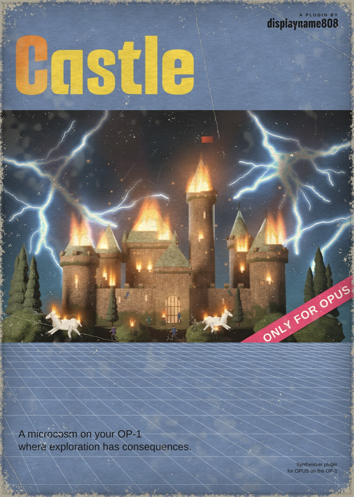

Castle
A drone synth and a small, strange world inside your OP-1. Every turn has consequences.
Free download · OPUS core 2.29 or newer
~ welcome to my home on the web ~
Plugins for OPUS on the original OP-1.
This is the home of my OP-1 OPUS plugins. Have a look around, make some noise, and be careful with the orange knob.

A drone synth and a small, strange world inside your OP-1. Every turn has consequences.
Free download · OPUS core 2.29 or newer